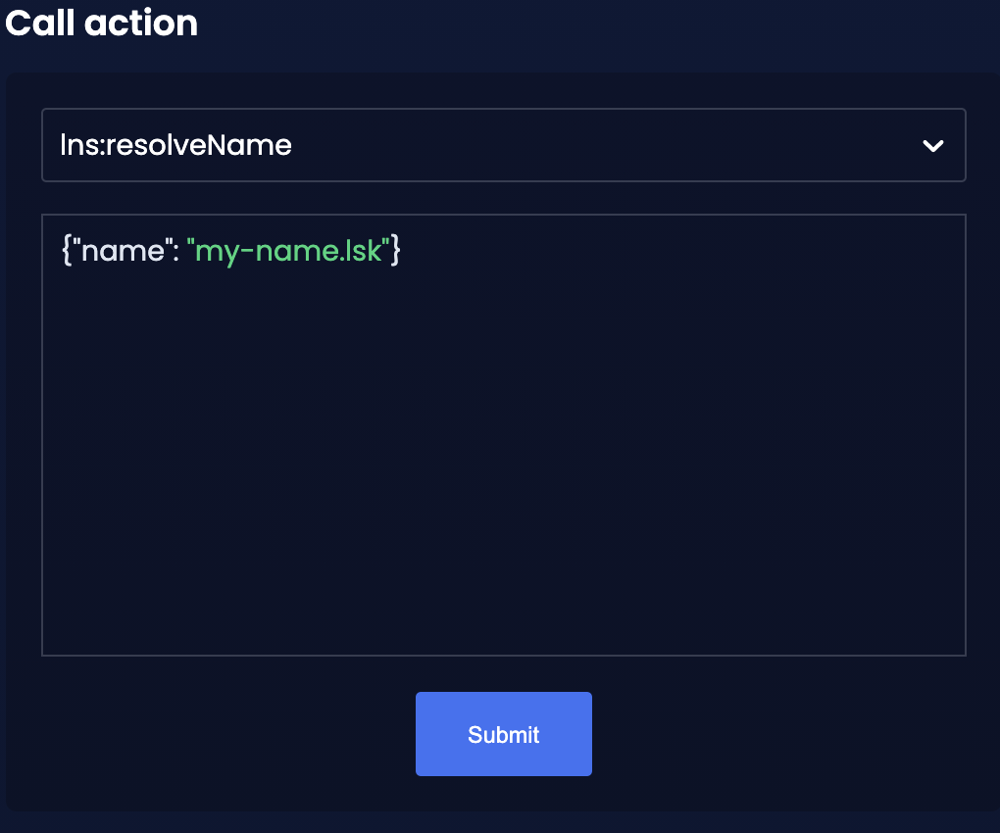
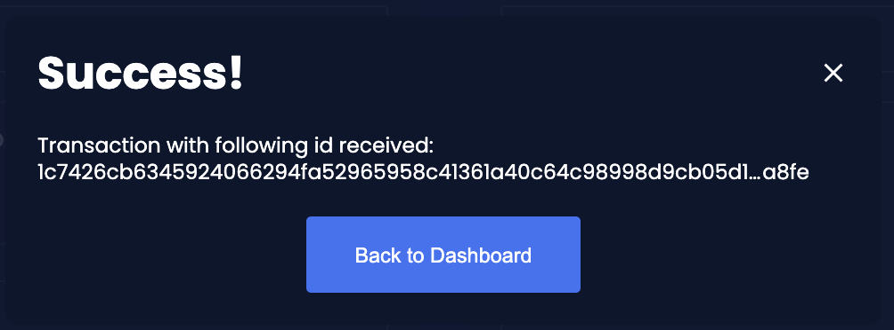

Chapter 1: Blockchain
1. Dependencies
Please refer to the section Lisk SDK Dependencies of the setup guide to set up all the required dependencies to follow this tutorial, if you haven’t done so alrerady.
2. Bootstrapping the default application
Please follow the section Initializing a new blockchain application of the setup guide to bootstrap the LNS blockchain application.
|
Please use |
To customize the default blockchain application to suit our desired use case, we will now generate the LNS module skeleton.
Create the module skeleton by executing the command lisk generate:module like shown below:
lisk generate:module lns 1000The command expects two arguments:
-
The module name
-
The module ID
This will information will be used to create the corresponding module skeleton.
├── src │ ├── app │ │ ├── app.ts │ │ ├── index.ts │ │ ├── modules │ │ │ └── lns │ │ │ └── lns_module.ts (1) │ │ ├── modules.ts │ │ ├── plugins │ │ └── plugins.ts
| 1 | The newly created skeleton for the LNS module |
Read the following sections to learn how to further extend the LNS module to suit the desired use case.
3. Creating the LNS module assets
The first part of the module that we implement here are the assets to handle the different transaction types register, reverse lookup and update records.
3.1. Register Domain
As first step for creating the asset, use Lisk Commander again, this time, to create the asset skeleton.
Execute the following command:
lisk generate:asset lns register 1├── src │ ├── app │ │ ├── app.ts │ │ ├── index.ts │ │ ├── modules │ │ │ └── lns │ │ │ ├── assets │ │ │ │ └── register.ts (1) │ │ │ └── lns_module.ts │ │ ├── modules.ts │ │ ├── plugins │ │ └── plugins.ts
| 1 | The newly created skeleton for the register asset. |
When you open register.ts at this point, it will look like this:
import { BaseAsset, ApplyAssetContext, ValidateAssetContext } from 'lisk-sdk';
export class RegisterAsset extends BaseAsset {
public name = 'register';
public id = 1;
// Define schema for asset
public schema = {
$id: 'lns/register-asset',
title: 'RegisterAsset transaction asset for lns module',
type: 'object',
required: [],
properties: {},
};
public validate({ asset }: ValidateAssetContext<{}>): void {
// Validate your asset
}
// eslint-disable-next-line @typescript-eslint/require-await
public async apply({ asset, transaction, stateStore }: ApplyAssetContext<{}>): Promise<void> {
throw new Error('Asset "register" apply hook is not implemented.');
}
}As you can see, the asset name and ID are already pre-filled with the values we provided when creating the asset skeleton.
As next step, we want to define the asset schema, which defines which kind of data is expected by the application to successfully register a new domain for a user account.
3.1.1. Schema
Create a new folder data/ inside the lns module folder.
mkdir dataThis folder is created to maintain a better overview, and will store all account and asset schemas which are relevant to the LNS module.
mkdir data/assetsInside the data/assets folder, create a new file register.ts, which will contain the schemas related to the register asset.
The first thing we define in the file, is an interface for the expected asset data of a register transaction.
It describes in a straight-forward way, what data is expected to be in the transaction asset for a successful registration of a new domain.
The following information is required for a successful registration:
-
name(string): The domain name to register for the sending account. -
ttl(number): Time-To-Live: Time which needs to pass, until the records for the domain can be updated again. -
registerFor(number): The duration to reserve this domain for the sender account.
The corresponding interface looks like this:
export interface RegisterAssetProps {
name: string;
ttl: number;
registerFor: number;
}This is described in the following asset schema, which is shown below:
export const registerAssetPropsSchema = {
$id: 'lns/assets/register',
title: 'RegisterAsset transaction asset for lns module',
type: 'object',
required: ['name', 'ttl', 'registerFor'],
properties: {
name: {
dataType: 'string',
fieldNumber: 1,
},
ttl: {
dataType: 'uint32',
fieldNumber: 2,
},
registerFor: {
dataType: 'uint32',
fieldNumber: 3,
},
},
}Add the interface and asset schema to the file and save it.
Now, just include the schema in the asset file:
import { BaseAsset, ApplyAssetContext, ValidateAssetContext } from 'lisk-sdk';
import { RegisterAssetProps, registerAssetPropsSchema } from '../data';
export class RegisterAsset extends BaseAsset<RegisterAssetProps> {
public name = 'register';
public id = 1;
// Define schema for asset
public schema = registerAssetPropsSchema;
// ...
}3.1.2. Validation
Create a new file constants.ts inside the lns module folder.
This file is created to maintain a better overview, and will store all constants which are relevant to the LNS module and its' assets.
Add the following two constants.
export const MIN_TTL_VALUE = 60 * 60; // 1 hour
export const VALID_TLDS = ['lsk'];Now import the constants into the register asset, and use them to check the validity of transaction assets:
We want to validate the following:
-
The TTL value needs to be above the minimum defined TTL value (60 * 60).
-
The
registerForvalue needs to be between 1 and 5. -
Only second level domain names can be registered.
-
Only domains with valid TLDs can be registered.
The corresponding checks look like this:
import { BaseAsset, ApplyAssetContext, ValidateAssetContext } from 'lisk-sdk';
import { RegisterAssetProps, registerAssetPropsSchema } from '../data';
import { MIN_TTL_VALUE, VALID_TLDS } from '../constants';
export class RegisterAsset extends BaseAsset<RegisterAssetProps> {
// ...
public validate({ asset }: ValidateAssetContext<RegisterAssetProps>): void {
if (asset.ttl < MIN_TTL_VALUE) {
throw new Error(`Must set TTL value larger or equal to ${MIN_TTL_VALUE}`);
}
if (asset.registerFor < 1) {
throw new Error('You can register name at least for 1 year.');
}
if (asset.registerFor > 5) {
throw new Error('You can register name maximum for 5 year.');
}
const chunks = asset.name.split(/\./);
if (chunks.length > 2) {
throw new Error('You can only register second level domain name.');
}
if (!VALID_TLDS.includes(chunks[1])) {
throw new Error(`Invalid TLD found "${chunks[1]}". Valid TLDs are "${VALID_TLDS.join()}"`);
}
}
// ...
}3.1.3. State change
If the validation of the transaction asset doesn’t throw any errors, the apply() function is executed, which allows state changes on the blockchain, based on the received transaction data.
The following logic is implemented in the apply() function:
-
Checks, if the domain name was already registered, and throws an error in this case.
-
Creates a new LNS object based on the asset data of the received transaction and saves it in the blockchain.
-
Adds the namehash output of the domain name to the sender account under the key
lns.ownNodes.
import { addYears } from 'date-fns';
import { BaseAsset, ApplyAssetContext, ValidateAssetContext } from 'lisk-sdk';
import { LNSAccountProps, RegisterAssetProps, registerAssetPropsSchema } from '../data';
import { createLNSObject, getLNSObject, getNodeForName } from '../storage';
import { MIN_TTL_VALUE, VALID_TLDS } from '../constants';
export class RegisterAsset extends BaseAsset<RegisterAssetProps> {
// ...
public async apply({
asset,
stateStore,
transaction,
}: ApplyAssetContext<RegisterAssetProps>): Promise<void> {
// Get namehash output of the domain anme
const node = getNodeForName(asset.name);
// Check if this domain is already registered on the blockchain
const existingDomain = await getLNSObject(stateStore, node);
if (existingDomain) {
throw new Error(`The name "${asset.name}" already registered`);
}
// Create the LNS object and save it on the blockchain
const lnsObject = {
name: asset.name,
ttl: asset.ttl,
expiry: Math.ceil(addYears(new Date(), asset.registerFor).getTime() / 1000),
ownerAddress: transaction.senderAddress,
records: [],
};
await createLNSObject(stateStore, lnsObject);
// Get the sender account
const sender = await stateStore.account.get<LNSAccountProps>(transaction.senderAddress);
// Add the namehash output of the domain to the sender account
sender.lns.ownNodes = [...sender.lns.ownNodes, node];
// Save the updated sender account on the blockchain
await stateStore.account.set(sender.address, sender);
}
}
// ...
}Several utility functions are used inside of the apply function, which are implemented in a new file under the path src/app/modules/lns/storage.ts.
The implementation of these functions is explained in the next section in detail.
The LNSAccountProps are imported from the lns/data/ folder.
Create a new file lns/data/account_props.ts which exports the LNSAccountProps:
import { EMPTY_BUFFER } from "../constants";
export interface LNSAccountProps {
lns: {
ownNodes: Buffer[];
reverseLookup: Buffer;
};
}
export const lsnAccountPropsSchema = {
$id: 'lisk/lns/lnsAccount',
type: 'object',
required: ['ownNodes', 'reverseLookup'],
properties: {
reverseLookup: {
dataType: 'bytes',
fieldNumber: 1,
},
ownNodes: {
type: 'array',
fieldNumber: 2,
items: {
dataType: 'bytes',
},
},
},
default: {
ownNodes: [],
reverseLookup: EMPTY_BUFFER,
},
};Next, open the file lns/constants.ts, which was created in step Validation and add the following constant:
export const EMPTY_BUFFER = Buffer.alloc(0);3.1.4. Utility functions
Create a new file storage.ts in the LNS module folder.
Import the eth-ens-namehash package.
Implement the following functions:
-
getKeyForNode(node): Get the unique database key for a specific LNS object.
-
getNodeForName(name): Construct a node(namehash output) based on the domain name.
-
createLNSObject(stateStore, params): A function to create a new LNS object in the database.
-
getLNSObject(stateStore, node): A function to get a specific LNS object from the database.
getKeyForNode(node)
import * as namehash from 'eth-ens-namehash';
// constants
export const LNS_PREFIX = 'LNS';
export const VALID_TLDS = ['lsk'];
// Get a unique key for each LNS object
export const getKeyForNode = (node: Buffer): string => `${LNS_PREFIX}:${node.toString('hex')}`;getNodeForName(name)
import * as namehash from 'eth-ens-namehash';
// constants
export const LNS_PREFIX = 'LNS';
export const VALID_TLDS = ['lsk'];
// Get a unique key for each LNS object
export const getKeyForNode = (node: Buffer): string => `${LNS_PREFIX}:${node.toString('hex')}`;
// Create a hash from the domain name and return it as Buffer
export const getNodeForName = (name: string): Buffer =>
Buffer.from(namehash.hash(name).slice(2), 'hex');For the creation of the name hash output, aka node, reuse the hash() function of the eth-ens-namehash NPM package.
createLNSObject(stateStore, params)
Now implement the function to save a new LNS object in the database by reusing the above defined functions getNodeForName(name) and getKeyForNode(node) and the below defined LNS node schema.
The function createLNSObject() expects the following two arguments:
-
stateStore: the stateStore which is passed from the LNS module later. The stateStore allows to perform state changes on the blockchain. -
params: the parameters which will be used to create the new LNS object.-
ownerAddress
-
name
-
ttl
-
expiry
-
records
-
import { chain, codec, StateStore } from 'lisk-sdk';
import * as namehash from 'eth-ens-namehash';
// ...
export const createLNSObject = async (
stateStore: StateStore,
params: Omit<LNSNode, 'createdAt' | 'updatedAt' | 'node'> & { name: string },
): Promise<void> => {
const { name, ...lnsObject } = params;
const node = getNodeForName(name);
const input: LNSNode = {
...lnsObject,
name,
createdAt: Math.ceil(Date.now() / 1000),
updatedAt: Math.ceil(Date.now() / 1000),
};
await stateStore.chain.set(getKeyForNode(node), codec.encode(lnsNodeSchema, input));
};getLNSObject(stateStore, node)
Next, implement the function getLNSObject(), which gets a specific LNS object from the database, based on the provided node value.
The function getKeyForNode() is used to get a unique key for the LNS object in the database.
The function getLNSObject() expects the following two arguments:
-
stateStore: the stateStore which is passed from the LNS module later. The stateStore allows to perform state changes on the blockchain. -
node: The name hash of the LNS object which is requested from the database.
import { chain, codec, StateStore } from 'lisk-sdk';
import * as namehash from 'eth-ens-namehash';
// ...
export const getLNSObject = async (
stateStore: StateStore,
node: Buffer,
): Promise<LNSNode | undefined> => {
const result = await stateStore.chain.get(getKeyForNode(node));
if (!result) {
return;
}
// eslint-disable-next-line consistent-return
return codec.decode<LNSNode>(lnsNodeSchema, result);
};3.1.5. Schemas
Implement the following interfaces and schemas, which are be used inside the utility functions:
-
LNS node record schema: Interface and schema for an LNS node record.
-
LNS node schema: Interface and schema for an LNS node.
LNS node record schema
Create a new file data/lns_node_records.ts in the LNS module folder.
The interface for an LNS node record looks like this:
export interface LNSNodeRecord {
type: number; (1)
label: string; (2)
value: string; (3)
}
export type LNSNodeRecordJSON = LNSNodeRecord;| 1 | type: Type of the records as number.
1 stands for a CNAME record, 2 stands for a TXT record. |
| 2 | label: Label for the record. |
| 3 | value: Value for the record. |
Based on this interface, we can create the corresponding schema, which looks like this:
export const lnsNodeRecordSchema = {
$id: 'lisk/lns/lnsNodeRecord',
type: 'object',
required: ['type', 'label', 'value'],
properties: {
type: {
dataType: 'uint32',
fieldNumber: 1,
},
label: {
dataType: 'string',
fieldNumber: 2,
},
value: {
dataType: 'string',
fieldNumber: 3,
}
},
};LNS node schema
Create a new file data/lns_node.ts in the LNS module folder.
First define an interface which illustrates, how the LNS object will look like:
export interface LNSNode {
ownerAddress: Buffer; (1)
name: string;(2)
ttl: number;(3)
expiry: number;(4)
records: LNSNodeRecord[];(5)
createdAt: number;(6)
updatedAt: number;(7)
}| 1 | ownerAddress: The address of the domain owner as Buffer. |
| 2 | name: The domain name as String. |
| 3 | ttl: The TTL in seconds as number. |
| 4 | expiry: The amount of years until the domain registration expires as number. |
| 5 | records: A list of all existing records for this domain as LNSNodeRecord. |
| 6 | createdAt: Date of the domain registration as number. |
| 7 | updatedAt: Date of the last update of the domain and its' records as number. |
Based on this interface, we can create the corresponding schema, which looks like this:
export const lnsNodeSchema = {
$id: 'lisk/lns/lnsNode',
type: 'object',
required: ['ownerAddress', 'name', 'ttl', 'expiry', 'records', 'createdAt', 'updatedAt'],
properties: {
ownerAddress: {
dataType: 'bytes',
fieldNumber: 1,
},
name: {
dataType: 'string',
fieldNumber: 2,
},
ttl: {
dataType: 'uint32',
fieldNumber: 3,
},
expiry: {
dataType: 'uint32',
fieldNumber: 4,
},
createdAt: {
dataType: 'uint32',
fieldNumber: 5,
},
updatedAt: {
dataType: 'uint32',
fieldNumber: 6,
},
records: {
type: 'array',
fieldNumber: 7,
items: {
...lnsNodeRecordSchema,
},
},
},
};3.2. Update reverse lookup
Now that the first asset is prepared, and first utility functions to store and get LNS objects from the database are implemented, let’s move on to implement the second required asset for updating the reverse lookup of a domain for an account.
While a 'regular' lookup involves mapping from a name to an address, reverse lookup maps from an address back to a domain. This allows applications to display LNS names in place of hexadecimal addresses.
Because an account can register multiple domains, it is important to define, to which domain the address should resolve to by default.
To do this, the account owner needs to send a reverse lookup transaction to update the default domain, their account address should default to.
Similar to the register asset, use Lisk Commander to first generate the asset skeleton.
Use reverse_lookup as asset name and 2 as asset ID.
lisk generate:asset lns reverse_lookup 23.2.1. Schema
Create a new file und the path src/app/modules/lns/data/assets/reverse_lookup.ts and add the asset schema for the reverse lookup transaction.
export interface ReverseLookupAssetProps {
name: string;
}
export const reverseLookupAssetPropsSchema = {
$id: 'lns/assets/set-lookup',
title: 'SetLookup transaction asset for lns module',
type: 'object',
required: ['name'],
properties: {
name: {
dataType: 'string',
fieldNumber: 1,
},
},
}Add the interface and asset schema to the file and save it.
Now include the schema in the asset file:
import { ApplyAssetContext, BaseAsset } from 'lisk-sdk';
import { LNSAccountProps, ReverseLookupAssetProps, reverseLookupAssetPropsSchema } from '../data';
import { getNodeForName } from '../storage';
export class ReverseLookupAsset extends BaseAsset<ReverseLookupAssetProps> {
public name = 'reverse-lookup';
public id = 2;
// Define schema for asset
public schema = reverseLookupAssetPropsSchema;
// ...
}3.2.2. State change
The validation is not required for the reverse lookup transaction asset, so we can directly move on to implement the apply()` function.
The following logic is implemented:
-
Check, if the domain name was already registered and if the transaction sender owns this domain, and throw an error if not.
-
Add the hash value of the domain as reverse lookup domain to the senders account under the key
lns.reverseLookup.
public async apply({
asset,
stateStore,
transaction,
}: ApplyAssetContext<ReverseLookupAssetProps>): Promise<void> {
const node = getNodeForName(asset.name);
const sender = await stateStore.account.get<LNSAccountProps>(transaction.senderAddress);
const exists = sender.lns.ownNodes.find(n => n.equals(node));
if (!exists) {
throw new Error('You can only assign lookup node which you own.');
}
sender.lns.reverseLookup = node;
await stateStore.account.set(sender.address, sender);
}3.3. Update records
Finally, create the asset for updating the records of a domain. This is the last of the three assets in the LNS module.
| The CNAME and TXT records have no distinct difference in the LNS blockchain application. A different handling of the records can be implemented at later stage. I.e. if you build any DNS provider service on top of the LNS app, then you can use CNAME and TXT records differently there. |
lisk generate:asset lns update_records 33.3.1. Schema
Create a new file for schemas under the path lns/data/assets/update_records.ts and define the asset schema for the "update records" transaction.
import { LNSNodeRecord, lnsNodeRecordSchema } from "../lns_node_record";
export interface UpdateRecordsAssetProps {
name: string;
records: LNSNodeRecord[];
}
export const updateRecordsAssetPropsSchema = {
$id: 'lns/assets/update-records',
title: 'Update Records transaction asset for lns module',
type: 'object',
required: ['records'],
properties: {
name: {
dataType: 'string',
fieldNumber: 1,
},
records: {
type: 'array',
fieldNumber: 2,
items: {
...lnsNodeRecordSchema,
},
}
},
}Now include the schema in the asset file.
import { ApplyAssetContext, BaseAsset, ValidateAssetContext } from 'lisk-sdk';
import { LNSAccountProps, UpdateRecordsAssetProps, updateRecordsAssetPropsSchema } from '../data';
export class UpdateRecordsAsset extends BaseAsset<UpdateRecordsAssetProps> {
public name = 'update-records';
public id = 3;
// Define schema for asset
public schema = updateRecordsAssetPropsSchema;
// ...
}3.3.2. Validation
Open the file lns/constants.ts, which was created in step Validation, and add the following constants:
export const VALID_RECORD_TYPES = [CNAME_RECORD_TYPE, TXT_RECORD_TYPE];
export const MAX_RECORDS = 50;
export const MIN_RECORD_LABEL_LENGTH = 3;
export const MAX_RECORD_LABEL_LENGTH = 15;
export const MIN_RECORD_VALUE_LENGTH = 3;
export const MAX_RECORD_VALUE_LENGTH = 255;Then, import the constants inside of update_records.ts and implement the validate function as follows:
import { ApplyAssetContext, BaseAsset, ValidateAssetContext } from 'lisk-sdk';
import {
MAX_RECORDS,
MAX_RECORD_LABEL_LENGTH,
MAX_RECORD_VALUE_LENGTH,
MIN_RECORD_LABEL_LENGTH,
MIN_RECORD_VALUE_LENGTH,
VALID_RECORD_TYPES,
} from '../constants';
import { LNSAccountProps, UpdateRecordsAssetProps, updateRecordsAssetPropsSchema } from '../data';
export class UpdateRecordsAsset extends BaseAsset<UpdateRecordsAssetProps> {
public name = 'update-records';
public id = 3;
// Define schema for asset
public schema = updateRecordsAssetPropsSchema;
// Define asset validation
public validate({ asset }: ValidateAssetContext<UpdateRecordsAssetProps>): void {
// Check, if number of records to be updated is below the maximum allowed amount (here: MAX_RECORDS = 50)
if (asset.records.length > MAX_RECORDS) {
throw new Error(`Can associate maximum ${MAX_RECORDS} records. Got ${asset.records.length}.`);
}
const recordKeys = new Set(asset.records.map(r => `${r.type.toString()}:${r.label}`));
// Checks if all records are unique
if (recordKeys.size !== asset.records.length) {
throw new Error('Records should be unique among type and label');
}
for (const record of asset.records) {
// Checks if all records have valid record types
if (!VALID_RECORD_TYPES.includes(record.type)) {
throw new Error(
`Invalid record type "${
record.type
}". Valid record types are ${VALID_RECORD_TYPES.join()}`,
);
}
// Checks, if record labels have a valid length
if (
record.label.length > MAX_RECORD_LABEL_LENGTH ||
record.label.length < MIN_RECORD_LABEL_LENGTH
) {
throw new Error(
`Record label can be between ${MIN_RECORD_LABEL_LENGTH}-${MAX_RECORD_LABEL_LENGTH}.`,
);
}
// Checks, if record values have a valid length
if (
record.value.length > MAX_RECORD_VALUE_LENGTH ||
record.value.length < MIN_RECORD_VALUE_LENGTH
) {
throw new Error(
`Record value can be between ${MIN_RECORD_VALUE_LENGTH}-${MAX_RECORD_VALUE_LENGTH}.`,
);
}
}
}
// ...
}3.3.3. State change
The following logic is implemented:
-
Throw an error, if the provided domain name is not registered to an account.
-
Throw an error, sender of the transaction is not the owner of the registered domain name.
-
Throw an error, if the defined TTL hasn’t passed yet.
-
If no errors are thrown, update the LNS object with the new records from the asset.
import { ApplyAssetContext, BaseAsset, ValidateAssetContext } from 'lisk-sdk';
import {
MAX_RECORDS,
MAX_RECORD_LABEL_LENGTH,
MAX_RECORD_VALUE_LENGTH,
MIN_RECORD_LABEL_LENGTH,
MIN_RECORD_VALUE_LENGTH,
VALID_RECORD_TYPES,
} from '../constants';
import { LNSAccountProps, UpdateRecordsAssetProps, updateRecordsAssetPropsSchema } from '../data';
import { getLNSObject, updateLNSObject, getNodeForName } from '../storage';
import { isTTLPassed } from '../utils';
export class UpdateRecordsAsset extends BaseAsset<UpdateRecordsAssetProps> {
public name = 'update-records';
public id = 3;
// ...
public async apply({
asset,
stateStore,
transaction,
}: ApplyAssetContext<UpdateRecordsAssetProps>): Promise<void> {
// Get the sender account from the database
const sender = await stateStore.account.get<LNSAccountProps>(transaction.senderAddress);
// Get the hash of the name
const node = getNodeForName(asset.name);
// Get the LNS object from the database
const lnsObject = await getLNSObject(stateStore, node);
// Validate, if the corresponding LNS object exists
if (!lnsObject) {
throw new Error(`LNS object with name "${asset.name}" is not registered`);
}
// Validate, that the sender registered the LNS object
if (!lnsObject.ownerAddress.equals(sender.address)) {
throw new Error('Only owner of hte LNS object can update records.');
}
// Validate, that the TTL for this LNS object to update the records has passed
if (!isTTLPassed(lnsObject)) {
throw new Error('You have to wait for TTL from the last update.');
}
// Update the LNS object with the new records from the asset
await updateLNSObject(stateStore, { node, records: asset.records });
}
}The function updateLNSObject() is a new function which is added to the utility functions in the next section.
3.3.4. Utility functions
Open the file storage.ts which was previously created in step Utility functions, and define a new function updateLSNObject() which updates a certain LNS object in the database, based on provided parameters.
export const updateLSNObject = async (
stateStore: StateStore,
params: Partial<Omit<LNSNode, 'createdAt' | 'updatedAt'>> & { node: Buffer },
): Promise<void> => {
const lnsObject = await getLNSObject(stateStore, params.node);
if (!lnsObject) {
throw new Error('No lns object is associated with this name');
}
lnsObject.ttl = params.ttl ?? lnsObject.ttl;
lnsObject.ownerAddress = params.ownerAddress ?? lnsObject.ownerAddress;
lnsObject.expiry = params.expiry ?? lnsObject.expiry;
lnsObject.records = params.records ?? lnsObject.records;
lnsObject.updatedAt = Math.ceil(Date.now() / 1000);
await stateStore.chain.set(getKeyForNode(params.node), codec.encode(lnsNodeSchema, lnsObject));
};With this, all the required assets of the LNS blockchain application are implemented. The final step is now to add them to module, which will be done in the next chapter, where the LNS module is implemented.
4. Creating the LNS module
To implement the LNS module, take a look at the module skeleton:
import {
BaseModule,
AfterBlockApplyContext,
TransactionApplyContext,
BeforeBlockApplyContext,
AfterGenesisBlockApplyContext,
// GenesisConfig
} from 'lisk-sdk';
export class LnsModule extends BaseModule {
public actions = {
// Example below
// getBalance: async (params) => this._dataAccess.account.get(params.address).token.balance,
// getBlockByID: async (params) => this._dataAccess.blocks.get(params.id),
};
public reducers = {
// Example below
// getBalance: async (
// params: Record<string, unknown>,
// stateStore: StateStore,
// ): Promise<bigint> => {
// const { address } = params;
// if (!Buffer.isBuffer(address)) {
// throw new Error('Address must be a buffer');
// }
// const account = await stateStore.account.getOrDefault<TokenAccount>(address);
// return account.token.balance;
// },
};
public name = 'lns';
public transactionAssets = [];
public events = [
// Example below
// 'hello:newBlock',
];
public id = 1000;
// public constructor(genesisConfig: GenesisConfig) {
// super(genesisConfig);
// }
// Lifecycle hooks
public async beforeBlockApply(_input: BeforeBlockApplyContext) {
// Get any data from stateStore using block info, below is an example getting a generator
// const generatorAddress = getAddressFromPublicKey(_input.block.header.generatorPublicKey);
// const generator = await _input.stateStore.account.get<TokenAccount>(generatorAddress);
}
public async afterBlockApply(_input: AfterBlockApplyContext) {
// Get any data from stateStore using block info, below is an example getting a generator
// const generatorAddress = getAddressFromPublicKey(_input.block.header.generatorPublicKey);
// const generator = await _input.stateStore.account.get<TokenAccount>(generatorAddress);
}
public async beforeTransactionApply(_input: TransactionApplyContext) {
// Get any data from stateStore using transaction info, below is an example
// const sender = await _input.stateStore.account.getOrDefault<TokenAccount>(_input.transaction.senderAddress);
}
public async afterTransactionApply(_input: TransactionApplyContext) {
// Get any data from stateStore using transaction info, below is an example
// const sender = await _input.stateStore.account.getOrDefault<TokenAccount>(_input.transaction.senderAddress);
}
public async afterGenesisBlockApply(_input: AfterGenesisBlockApplyContext) {
// Get any data from genesis block, for example get all genesis accounts
// const genesisAccounts = genesisBlock.header.asset.accounts;
}
}As you can see, the following values have been pre-filled when creating the LNS module with Lisk Commander in step Bootstrapping the default application.
-
name: The module name (here:lns). -
id: The module ID (here:1000).
We will now implement the following parts of the skeleton:
The events and lifecycle hooks are not required in this use case, so you can leave the skeletons as they are.
4.1. Assets
Now, let’s add the assets we created before in step Creating the LNS module assets. Import the different assets to the LNS module as shown in the snippet below.
Then, create a new instance of each asset and add them as array to the transactionAssets property of the LNS module.
import { RegisterAsset } from './assets/register';
import { UpdateRecordsAsset } from './assets/update_records';
import { ReverseLookupAsset } from './assets/reverse_lookup';
export class LnsModule extends BaseModule {
// ...
public transactionAssets = [
new RegisterAsset(),
new ReverseLookupAsset(),
new UpdateRecordsAsset(),
];
// ...
}That’s all that is needed to add new assets to the LNS module.
4.2. Actions
The LNS module should have the following actions:
-
lookupAddress: returns an LNS object based on a provided account address. -
resolveName: returns an LNS object based on a domain name. -
resolveNode: returns an LNS object based on a node hash value.
All three actions are returning an LNS object, based on different input parameters like the address it is registered to, the domain name that is registered in the LNS object, or a hash of the LNS object, which is typically stored in user account under the key lns.ownNodes.
The main logic of the different actions is imported from the file storage.ts, and is explained in detail in step Utility functions below.
import {
BaseModule,
codec,
AfterBlockApplyContext,
TransactionApplyContext,
BeforeBlockApplyContext,
AfterGenesisBlockApplyContext,
// GenesisConfig
} from 'lisk-sdk';
import { RegisterAsset } from './assets/register';
import { UpdateRecordsAsset } from './assets/update_records';
import { ReverseLookupAsset } from './assets/reverse_lookup';
import { LNSNode, LNSNodeJSON, lnsNodeSchema, lsnAccountPropsSchema } from './data';
import { lookupAddress, resolveName, resolveNode } from './storage';
export class LnsModule extends BaseModule {
public actions = {
lookupAddress: async (params: Record<string, unknown>): Promise<LNSNodeJSON> => {
const lnsObject = await lookupAddress({
accountGetter: this._dataAccess.getAccountByAddress.bind(this),
chainGetter: this._dataAccess.getChainState.bind(this),
address: Buffer.from((params as { address: string }).address, 'hex'),
});
return codec.toJSON(lnsNodeSchema, lnsObject);
},
resolveName: async (params: Record<string, unknown>): Promise<LNSNodeJSON> => {
const lnsObject = await resolveName({
chainGetter: this._dataAccess.getChainState.bind(this),
name: (params as { name: string }).name,
});
return codec.toJSON(lnsNodeSchema, lnsObject);
},
resolveNode: async (params: Record<string, unknown>): Promise<LNSNodeJSON> => {
const lnsObject = await resolveNode({
chainGetter: this._dataAccess.getChainState.bind(this),
node: Buffer.from((params as { node: string }).node, 'hex'),
});
return codec.toJSON(lnsNodeSchema, lnsObject);
},
};
// ...
}4.3. Reducers
The methods needed in reducers are very similar to the methods in Actions above.
The only difference is, that the StateStore is available inside of reducers, so let’s use it instead of dataAccess to query the database:
import {
BaseModule,
codec,
StateStore,
AfterBlockApplyContext,
TransactionApplyContext,
BeforeBlockApplyContext,
AfterGenesisBlockApplyContext,
// GenesisConfig
} from 'lisk-sdk';
import { RegisterAsset } from './assets/register';
import { UpdateRecordsAsset } from './assets/update_records';
import { ReverseLookupAsset } from './assets/reverse_lookup';
import { LNSNode, LNSNodeJSON, lnsNodeSchema, lsnAccountPropsSchema } from './data';
import { lookupAddress, resolveName, resolveNode } from './storage';
export class LnsModule extends BaseModule {
// ...
public reducers = {
lookupAddress: async (
params: Record<string, unknown>,
stateStore: StateStore,
): Promise<LNSNode> =>
lookupAddress({
accountGetter: stateStore.account.get.bind(this),
chainGetter: stateStore.chain.get.bind(this),
address: (params as { address: Buffer }).address,
}),
resolveName: async (
params: Record<string, unknown>,
stateStore: StateStore,
): Promise<LNSNode> =>
resolveName({
chainGetter: stateStore.chain.get.bind(this),
name: (params as { name: string }).name,
}),
resolveNode: async (
params: Record<string, unknown>,
stateStore: StateStore,
): Promise<LNSNode> =>
resolveNode({
chainGetter: stateStore.chain.get.bind(this),
node: (params as { node: Buffer }).node,
}),
};
// ...
}Don’t forget to add a new interface for LNSNodeJSON to the file data/lns_node.ts.
// ...
export interface LNSNodeJSON {
ownerAddress: string;
name: string;
ttl: number;
expiry: number;
records: LNSNodeRecordJSON[];
createdAt: number;
updatedAt: number;
}
// ...4.4. Utility functions
Add the code of the functions resolveNode(), resolveName()` and lookupAddress() to the file storage.ts, to complete the implementation of the actions and reducers of the LNS module.
import * as namehash from 'eth-ens-namehash';
import { chain, codec, StateStore } from 'lisk-sdk';
import { EMPTY_BUFFER, LNS_PREFIX } from './constants';
import { LNSAccountProps, LNSNode, lnsNodeSchema } from './data';
import { isExpired } from './utils';
export const getKeyForNode = (node: Buffer): string => `${LNS_PREFIX}:${node.toString('hex')}`;
export const getNodeForName = (name: string): Buffer =>
Buffer.from(namehash.hash(name).slice(2), 'hex');
export const resolveNode = async ({
chainGetter,
node,
}: {
chainGetter: (address: string) => Promise<Buffer | undefined>;
node: Buffer;
}): Promise<LNSNode> => {
const result = await chainGetter(getKeyForNode(node));
if (!result) {
throw new Error(`Node "${node.toString('hex')}" could not resolve.`);
}
const lnsNode = codec.decode<LNSNode>(lnsNodeSchema, result);
if (isExpired(lnsNode)) {
throw new Error(`Node "${node.toString('hex')}" is associated to an expired LNS object.`);
}
return lnsNode;
};
export const resolveName = async ({
chainGetter,
name,
}: {
chainGetter: (address: string) => Promise<Buffer | undefined>;
name: string;
}): Promise<LNSNode> => {
const result = await chainGetter(getKeyForNode(getNodeForName(name)));
if (!result) {
throw new Error(`Name "${name}" could not resolve.`);
}
const lnsNode = codec.decode<LNSNode>(lnsNodeSchema, result);
if (isExpired(lnsNode)) {
throw new Error(`Name "${name}" is associated to an expired LNS object.`);
}
return lnsNode;
};
export const lookupAddress = async ({
accountGetter,
chainGetter,
address,
}: {
accountGetter: (address: Buffer) => Promise<chain.Account<LNSAccountProps>>;
chainGetter: (address: string) => Promise<Buffer | undefined>;
address: Buffer;
}): Promise<LNSNode> => {
let account: chain.Account<LNSAccountProps>;
try {
account = await accountGetter(address);
} catch {
throw new Error(`Lookup account "${address.toString('hex')}" not found.`);
}
if (account.lns.reverseLookup === EMPTY_BUFFER) {
throw new Error(`Account "${address.toString('hex')}" is not associated with any LNS object.`);
}
const result = await chainGetter(getKeyForNode(account.lns.reverseLookup));
if (!result) {
throw new Error(`Problem looking up node "${account.lns.reverseLookup.toString('hex')}"`);
}
const lnsNode = codec.decode<LNSNode>(lnsNodeSchema, result);
if (isExpired(lnsNode)) {
throw new Error(`Account "${address.toString('hex')}" is associated to an expired LNS object.`);
}
return lnsNode;
};
// ...With this last step, all required parts of the LNS module are implemented.
4.5. Updating the genesis block
In case the LNS tutorial was cloned from the lisk-sdk-examples repository, this step can be skipped, as the example application already contains the correct genesis block.
|
If the blockchain application was bootstrapped newly with lisk init, it still contains a default genesis block, which doesnt include the account schema of the new LNS module.
Therefore it is needed to create a new genesis block with genesis accounts that include the new account properties of the LNS module.
| A lot of detailed information about this process can be found in the guide Generating a genesis block. |
./bin/run genesis-block:create --output /home/USERNAME/.lisk/lns/config/defaultCopy the following content to ~/.lisk/lns/config/default/config.json:
-
copy the content of
forging_info.jsonto under forging.delegates -
copy the content of
password.jsonto under forging.defaultPassword
Save the file accounts.json somewhere safe, it contains the credentials for all genesis accounts.
In the LNS example application, the file is stored in the lisk-name-service/lns/.secret/ folder.
After the genesis block and config are updated, the application should start again successfully. To start, run the following command:
./bin/run startBefore we go on with developing the frontend part of the LNS application, let’s quickly check if the blockchain application is working as expected by enabling the Dashboard plugin in the next chapter.
5. Connecting the Dashboard and Faucet plugins
The Dashboard plugin provides a web interface that allows developers to interact with their blockchain application during development.
The Faucet plugin provides a web interface with a faucet, allowing account in the network to receive free tokens conveniently.
By enabling the Dashboard and Faucet plugins in the blockchain application, we are able to test the functionality of the application by interacting with it through the browser.
Among other things, it will be possible to …
-
… create new accounts with the Dashboard
-
… fund accounts with tokens via the Faucet
-
… send transactions to the LNS application to …
-
… register new domain names.
-
… set the domain name for a reverse lookup.
-
… update the records of a domain name.
-
-
… call actions on the LNS application to …
-
… perform a reverse lookup for an account address.
-
… return an LNS object based on the domain name.
-
… return an LNS object based on the LNS object hash.
-
… perform a reverse lookup for an account address.
-
Before the Dashboard and Faucet plugins can be used for this purpose, it is first needed to install them and to register them with the LNS application, which is done in the next step.
|
More information about the Dashboard plugin can be found in the development guide Interacting with the blockchain application via the dashboard plugin or on the reference page of the Dashboard plugin. More information about the Faucet plugin can be found on the reference page of the Faucet plugin. |
5.1. Registering the Dashboard plugin
Install the dashboard plugin:
npm i @liskhq/lisk-framework-dashboard-pluginNow open plugins.ts, import the Dashboard plugin, and register it with the application as shown below:
import { Application } from 'lisk-sdk';
import { DashboardPlugin } from "@liskhq/lisk-framework-dashboard-plugin";
export const registerPlugins = (app: Application): void => {
app.registerPlugin(DashboardPlugin);
};Save and close plugins.ts.
5.2. Registering the Faucet plugin
| You can skip this step, if you don’t create a new account in step Create new account, but rather use on of the existing genesis accounts. Genesis accounts normally have an initial amount of tokens in their balance, so in this case, it is not needed for them to receive funds via the faucet. |
Install the faucet plugin:
npm i @liskhq/lisk-framework-dashboard-pluginNow open plugins.ts, import the Dashboard plugin, and register it with the application as shown below:
import { Application } from 'lisk-sdk';
import { DashboardPlugin } from "@liskhq/lisk-framework-dashboard-plugin";
import { FaucetPlugin } from "@liskhq/lisk-framework-faucet-plugin";
export const registerPlugins = (app: Application): void => {
app.registerPlugin(DashboardPlugin);
app.registerPlugin(FaucetPlugin);
};Save and close plugins.ts.
Choose one of the genesis delegate to be the faucet account, e.g. the first account in lisk-name-service/.secret/accounts.json.
[
{
"passphrase": "brush swamp sign omit cabin review menu tent spend shy plug strategy",
"address": "49e8b0411cd96a17a72f88dfe802179b4113924f"
},
// ...
]Use Lisk Commander to encrypt the passphrase of the account with a password. Save the password somewhere, it is needed to enable and disable the faucet later.
$ lisk passphrase:encrypt
? Please enter passphrase: [hidden]
? Please re-enter passphrase: [hidden]
? Please enter password: [hidden] (1)
? Please re-enter password: [hidden]
{"encryptedPassphrase":"iterations=1000000&cipherText=643bfbf1b6f1dc0ce740dd9fc9f27a682e476dc5de4e6c023deded4d3efe2822346226541106b42638db5ba46e0ae0a338cb78fb40bce67fdec7abbca68e20624fa6b0d7&iv=8a9c461744b9e70a8ba65edd&salt=3fe00b03d10b7002841857c1f028196e&tag=c57a798ef65f5a7be617d8737828fd58&version=1"}| 1 | Choose a simple password to encrypt the passphrase symmetrically.
The password will be needed later to enable the faucet plugin through the action faucet:authorize. |
Open the config file of the LNS application which is located under the path ~/.lisk/lns/config/default/config.json and scroll down to the bottom of the file.
Add the required configuration options for the faucet plugin under the key plugins.faucet:
-
encryptedPassphrase: The encrypted passphrase of the account that will provide the tokens for the faucet. -
captchaSecretkey: The secret API key for the captcha. -
captchaSitekey: The API site key for the captcha.
The free site key and secret key for reCAPTCHA are used below for testing purposes.
"plugins": {
"faucet": {
"encryptedPassphrase": "iterations=1000000&cipherText=643bfbf1b6f1dc0ce740dd9fc9f27a682e476dc5de4e6c023deded4d3efe2822346226541106b42638db5ba46e0ae0a338cb78fb40bce67fdec7abbca68e20624fa6b0d7&iv=8a9c461744b9e70a8ba65edd&salt=3fe00b03d10b7002841857c1f028196e&tag=c57a798ef65f5a7be617d8737828fd58&version=1",
"captchaSecretkey": "6LeIxAcTAAAAAGG-vFI1TnRWxMZNFuojJ4WifJWe",
"captchaSitekey": "6LeIxAcTAAAAAJcZVRqyHh71UMIEGNQ_MXjiZKhI"
}
}The last step to use the Faucet plugin is to enable it via the action faucet:authorize.
This can be achieved with the Dashboard plugin.
Start the blockchain application again:
./bin/run startWait until the application start is completed.
Go to http://localhost:4005 to access the dashboard.
Now go to the Call actions section on the Dashboard, and select the action faucet:authorize.

The actions expects as input a boolean, if the plugin should be enabled, and a password the decrypt the encrypted passphrase that was saved in config.json above.
Add the following JSON object to the field for the asset data:
{
"enable": true,
"password": "myPassword" (1)
}| 1 | Change this to the password you used above to encrypt the passphrase in the Faucet plugin configuration. |
Hit the Submit button to invoke the action. You should see a confirmation that the action was invoked successfully.

It is now possible to use the faucet under http://localhost:4004 .

5.3. Checking the functionality of the LNS module
Now let’s go to the dashboard under http://localhost:4005 .

| The Dashboard is only storing data for the current browser session. Reloading the page will delete all temporary data in the accounts, block and transaction logs of the Dashboard. |
5.3.1. Create new account
Click on the button Generate new account in the top right corner of the page to create a new account:

The new account will also appear in the My Accounts section.
Clicking on the account will open again the above window with the account credentials.
5.3.2. Fund new account
Before it is possible to send any transactions, it is first needed to receive a certain amount of tokens to the new account. The tokens will be used to pay the transaction fees for the different transaction we are going to send.
Copy the Lisk32 address of the newly created account, go to the Faucet page, and receive tokens by pasting the address, checking the captcha, and hitting Request.

If the tokens were transferred successfully, you will see the following confirmation message:

Back on the Dashboard, it is possible to see the transfer transaction from the Faucet in the transactions log:

5.3.3. Register new domain
Let’s use the new account to register a domain name to it, which will be used as human-readable identifier for this account.
Scroll down to the Send transaction section and select lns:register from the dropdown menu.

Paste the passphrase of the newly created account, and add the required asset data for the lns:register transaction.

Hit the Submit button to post the transaction. If the transaction was transferred successfully, the following confirmation message will show up:

5.3.4. Call the actions resolveName and resolveNode
Once the lns:register transaction is applied, (which should be the case after ~10 seconds), a new LNS object for the domain name should be created, and a hash of this object should be added to the senders account.
This new LNS object can be queried by invoking the two actions lns:resolveName and lns:resolveNode which we defined before in section Actions.
Go to the section Call action on the dashboard and select lns:resolveName from the dropdown menu.
Provide the expected input for the action in the field below.

This should return the corresponding LNS object, which was just created by registering the domain name in the step before:

Now select lns:resolveNode from the dropdown menu.
Provide the expected input for the action in the field below.

If this returns the same result as lns:resolveName, it is verified that both actions work as expected.
5.3.5. Define a reverse lookup address
Let’s now add the newly created domain name as reverse lookup address for our account.
This will tell the LNS app to which domain name the address should resolve to by default. This is important, because a single account can register many different domain names at once.
In the Send transaction section, select lns:reverse-lookup from the dropdown menu.

Paste the passphrase of the account like before, and add the required asset data for the lns:reverse-lookup transaction.

Hit the Submit button to post the transaction. If the transaction was transferred successfully, the following confirmation message will show up:

In the section Recent Transactions on the dashboard, it is possible to see an overview about all sent transactions so far:

5.3.6. Update the records for a domain name
Now, last but not least, test the lns:update-records transaction, which allows a user to update the records of a registered domain name.
At the beginning, there are no existing records yet, so let’s create a first one:
Again, paste the passphrase of the account like before, and add the required asset data for the lns:update-records transaction.

Hit the Submit button to post the transaction. If the transaction was transferred successfully, the following confirmation message will show up:

In the section Recent Transactions on the dashboard, the overview about all sent transactions now looks like this:

5.3.7. Check account details
With the action app:getAccount, it is possible to get the data of an account based on its' address.
Please be aware that the action expects the account address in hexadecimal representation (not Lisk32), like shown in the example below.

As a result, we receive an object which contains all the account data.
The data for the lns module is added at the bottom.
The domain name hash is already added to the property lns.ownNodes, and the lns.reverseLookup property also points to this LNS object.

5.3.8. Perform a reverse lookup for an address
Finally, let’s check if the reverse lookup of the account address is working as expected.
In the section Call action, select lns:lookupAddress from the dropdown menu and provide the address in the input field, again, the address needs to be in hexadecimal representation.

The reverse lookup was successful, if the expected LNS object is returned.

All important features of the LNS blockchain application have now been successfully tested with help of the Dashboard plugin.